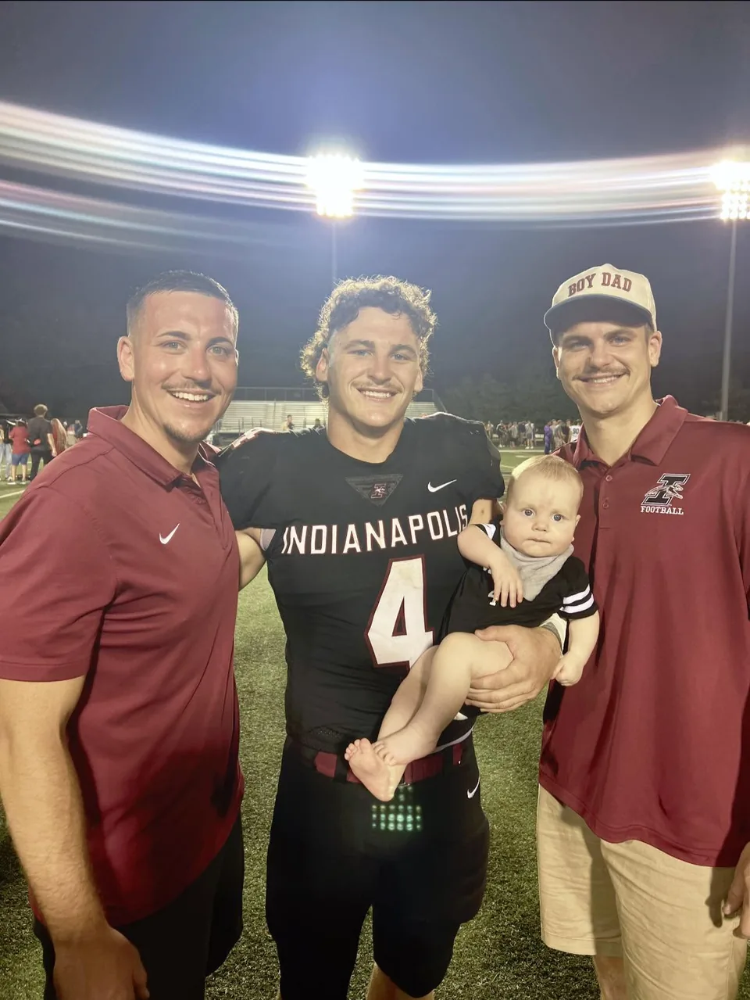

Indiana
Indiana roots. A competitive family.
I grew up in Indiana with my brothers, Koby and KJ. Sports and family have always been a big part of my life.
That still shows up in the way I work: pitch in, follow through, and make sure the team knows what’s happening.
